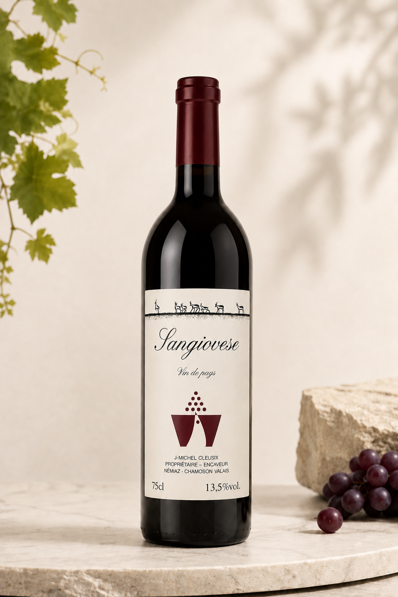

Sangiovese
Vin rouge fruité et soyeux, aux notes de cerise et d’herbes méditerranéennes. Parfait avec pâtes, viandes rôties et fromages affinés.
CHF 20.–
Achat en ligne : le bouton Shopify viendra ici.
Cépage emblématique d’Italie, le Sangiovese trouve en Valais une nouvelle expression, élégante et raffinée.
Sa robe rouge grenat s’accompagne d’un nez séduisant de cerise noire, de prune et d’herbes méditerranéennes, relevé par une touche vanillée. En bouche, il est généreux, fruité et soyeux, avec des tanins ronds et une belle persistance.
Ce vin charme par son équilibre et son intensité, idéal pour accompagner une cuisine conviviale et savoureuse.
Accords mets-vins : pâtes fraîches, lasagnes, viandes rôties, fromages affinés.
Température de service : 15–17 °C. Garde : 4 à 6 ans.
- Mention
- Vin de pays
- Lieu
- Némiaz, Chamoson, Valais
- Format
- 75 cl
- Alcool
- 13,5 % vol.